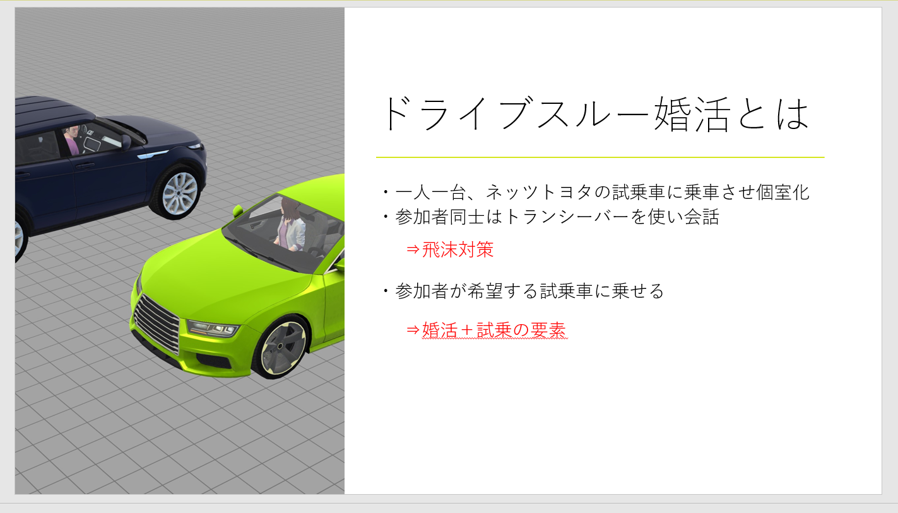

| 三年次の産学連携についてまとめます |
|
三年次の産学連携はネッツトヨタ東名古屋(現トヨタモビリティ)のコロナ禍での集客のための営業施策について取り組みました。 当時はコロナが猛威を振るっていたため、一番に考えなければならないことは感染対策でした。 そのため私が最初に考えた案はヴァーチャルキャラクターの作成でオンライン広告などを用いて集客することでした。 発想のきっかけとしては当時はサントリーやパチンコメーカーなどがVTuberを作成し、プロモーションなどに活用していたことでした。 これであれば当時は話題性にもなるし、流行に即している、かつコロナ禍でのステイホームでも確実に広告ができると考えていました。 しかし、実際には問題がいくつもあり、広告効果の測定や費用面などの問題があり、それの解決策があまり上手に提案できませんでした。 最大の問題はアドバイザーの方々からの感触がかなり悪かったことです。 相手の感触はかなり大事だと思い、コンペという点でこの案は諦めることにしました。 そこで新たに考えた案はドライブスルー婚活でした。 この案にした理由は何点かあります。 まずドライブスルーを利用しその車をネッツトヨタの試乗車を利用することにより車を使うというネッツトヨタらしさを出すことです 次に車という閉鎖空間を利用することにより各車に一人のみの乗車であれば感染対策となると考えたためです。 最後に車は個人保有よりは家族保有が強いので婚活という家庭作成の促進により将来的な顧客作成にまで結びつく可能性があると考えたためです  具体的な内容としては車に乗りながらトランシーバーを用いて会話をし、回転式で車を移動させながら婚活を行います。 その後は一般的な婚活パーティーを想定していました。 発表に関して意識したことは簡素に必要な分のみの説明、加えて具体的な運用方法を意識したことです。
これに関しては他のグループメンバーが頑張ってくれたおかげであり感謝しています。 改善案としては3DCGを利用して発表しましたがやめた方がよかったそうです。 最終的にこの案は優秀賞をいただくことができました。これは他メンバーのおかげでありとても感謝しています。 |